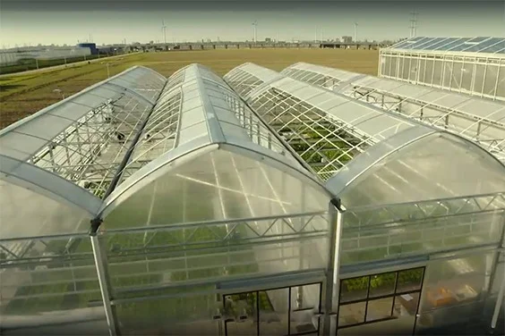

Premium hydroponic systems, vertical farming equipment, nutrients, grow lights, and modern cultivation solutions built for the future of farming.

Vertical farming is a modern growing approach where crops are cultivated in vertically stacked layers instead of spreading across large areas of horizontal farmland.
These systems can combine controlled water delivery, nutrients, lighting, growing media, and environmental management to create an organized growing environment. Vertical farming systems are commonly designed to make efficient use of available growing space.
Multiple growing levels use vertical space for organized crop production.
Water and nutrient solutions can be delivered through designed irrigation systems.
Indoor systems can use grow lighting to provide plants with controlled light conditions.
Temperature, humidity, nutrients, and other growing conditions can be monitored.
Crops are primarily spread across horizontal growing areas.
Crops are arranged across multiple vertically stacked growing levels.
The idea is simple: use vertical layers to organize more growing space within a controlled farming system.
Explore practical hydroponic, vertical, indoor, and irrigation systems designed to organize growing spaces, deliver water and nutrients efficiently, and support controlled crop production.
Grow plants without traditional soil by delivering water and nutrients directly to the root zone through systems such as NFT, DWC, drip, and other hydroponic growing methods.

Use multi-level racks, towers, and stacked growing structures to organize crops vertically and make practical use of available indoor or controlled growing space.

Create organized indoor growing environments using grow lights, irrigation equipment, ventilation, growing racks, and other technologies that help manage crop conditions.

Build reliable water-delivery systems with pumps, reservoirs, tubing, drip lines, fittings, and irrigation components designed for hydroponic and vertical growing setups.

Explore our selected range of products for hydroponic, vertical, indoor, and modern farming.
Efficient soil-free growing systems for controlled and productive cultivation.
View Products 02
02
Essential plant nutrients formulated to support healthy growth and productive cultivation.
View Products 03
03
Quality growing media designed to provide strong root support and efficient plant growth.
View Products 04
04
Reliable tools and equipment for efficient hydroponic and modern farming operations.
View ProductsFrom choosing the right system to growing healthy crops, GreenGrow makes modern farming simple and accessible.
Explore hydroponic systems, nutrients, growing media, and farming equipment.
Select the right equipment and prepare your growing environment for efficient.
Provide plants with the right water, nutrients, light, and growing conditions.
Monitor your crops, improve your process, and enjoy productive modern cultivation.
Simple systems. Smarter growing. Better possibilities.

07New to hydroponic or vertical farming? Follow a simple path from selecting your system to creating a productive growing environment.
Find a growing system that fits your space, crops, and farming goals.
Set up the essential equipment, nutrients, media, lighting, and irrigation.
Monitor your plants, learn from the process, and improve your growing results.
Find clear answers about vertical farming systems, hydroponic growing, equipment, irrigation, lighting, and controlled growing environments.
Vertical farming is a growing approach where crops are cultivated in vertically stacked levels instead of using only horizontal growing space. These systems can combine hydroponics, controlled irrigation, artificial lighting, growing media, and environmental management.
A vertical farming system places plants across multiple growing levels. Water and nutrients can be delivered through pumps, channels, drip lines, towers, or other irrigation components while lighting and environmental conditions are managed according to the growing setup.
Depending on the system, equipment may include vertical racks or towers, reservoirs, pumps, tubing, growing channels, growing media, nutrients, grow lights, timers, pH meters, EC meters, irrigation fittings, and other farming accessories.
Yes. Vertical farming can be designed for indoor environments using artificial grow lights, controlled irrigation, airflow management, temperature monitoring, and other equipment that helps create a managed growing environment.
Several hydroponic approaches can be adapted to vertical growing, including NFT channels, drip systems, tower systems, and other recirculating configurations. The appropriate system depends on the crop, available space, water delivery requirements, and growing goals.
A vertical farming setup may require growing systems, racks or towers, irrigation equipment, reservoirs, pumps, tubing, nutrients, growing media, grow lights, monitoring tools, and other components selected according to the system design.
Discover reliable hydroponic and vertical farming solutions designed for efficient modern growing.
Smart hydroponic and vertical farming supplies for modern growers, sustainable farms and productive growing spaces in green grow.